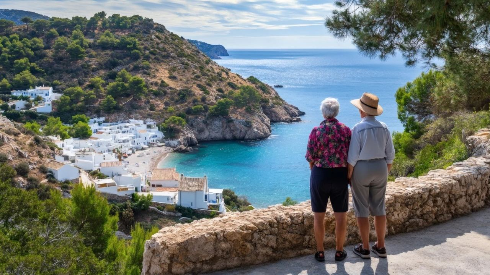
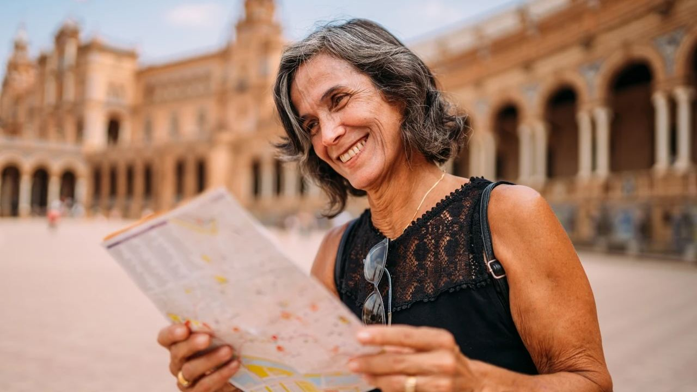
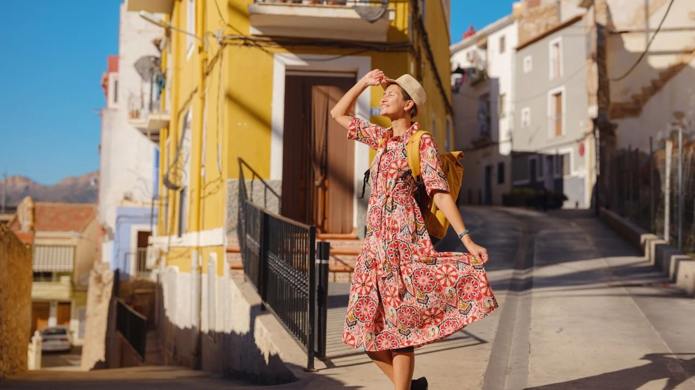

Leben in Spanien · Ruhestand
Das Leben in Spanien im Ruhestand – ein praktischer Ratgeber
 Von Aleksandra Kobus · · aktualisiert · 4 Min. Lesezeit
Von Aleksandra Kobus · · aktualisiert · 4 Min. Lesezeit

Kurz gesagt: Ein Paar mit abbezahlter Immobilie lebt an der Costa Blanca mit etwa 1.700–2.200 € im Monat komfortabel. Als Deutsche, Österreicher oder Schweizer brauchen Sie kein Visum, nur eine Anmeldung als Resident. Mit dem Formular S1 Ihrer Krankenkasse sind Sie in der Regel im spanischen öffentlichen Gesundheitssystem versichert. Ihre gesetzliche Rente wird weiter gezahlt, kann aber auch in Deutschland steuerpflichtig bleiben. Mieten Sie zuerst und lassen Sie sich steuerlich beraten.
Ruhestand in Spanien heißt mehr Sonne, das Meer in der Nähe und ein ruhigeres Lebenstempo. Er braucht aber auch Planung: Budget, Anmeldung, Krankenversicherung und Steuern. Dieser Ratgeber fasst alles Schritt für Schritt zusammen.
Warum der Ruhestand in Spanien?
- Klima. Lange, warme Sommer und milde Winter erlauben Zeit im Freien das ganze Jahr, gut für Körper und Seele.
- Lebenshaltungskosten. Der Alltag an der Küste ist günstiger als in Deutschland, Österreich oder der Schweiz, besonders Essen gehen, frische Lebensmittel und Dienstleistungen.
- Gesundheit. Das öffentliche Gesundheitssystem hat einen guten Ruf, und an der Küste gibt es viele Privatkliniken mit deutschsprachigen Ärzten.
- Gemeinschaft. An der Costa Blanca und der Costa del Sol leben große deutschsprachige Gemeinden, mit Vereinen, Stammtischen und deutschsprachigen Gottesdiensten. Das erleichtert das Ankommen sehr.
Die schönsten Orte für den Ruhestand
- Costa Blanca. Orte wie Altea, Jávea, Calpe, Dénia und Torrevieja bieten gutes Preis-Leistungs-Verhältnis, Golf, viele deutsche Nachbarn und den Flughafen Alicante in weniger als einer Stunde, mit Direktflügen in viele deutsche Städte.
- Costa del Sol. Marbella, Estepona, Fuengirola, Benalmádena und Nerja verbinden die mildesten Winter des Festlands mit sehr guter privater Medizin und dem Flughafen Málaga.
- Costa Cálida. Die Küste von Murcia am Mar Menor ist ruhiger und besonders günstig.
Verbringen Sie vor der Entscheidung ein paar Wochen außerhalb der Saison vor Ort. Manche Ferienorte sind im August voller Leben und im Januar sehr still. Für das ganze Jahr zählen Gesundheitszentrum, Geschäfte, Apotheke und Busverbindungen mehr als die erste Strandreihe.
Wie viel Geld braucht man?

Das hängt von Ort, Wohnung und Lebensstil ab. Als Orientierung für ein Paar mit abbezahlter Immobilie an der Costa Blanca:
- etwa 1.300–1.600 € im Monat für ein einfaches Leben,
- etwa 1.700–2.200 € im Monat für ein komfortables Leben.
Darin enthalten sind Lebensmittel, Strom und Wasser, Telefon und Internet, Auto, Versicherungen, Gemeinschaftskosten, kommunale Steuern und gelegentliches Essen gehen. Wer mietet, rechnet die Miete hinzu: Eine Wohnung an der Costa Blanca kostet langfristig oft 700–1.000 € im Monat, an der Costa del Sol mehr. Halten Sie eine Reserve für Reparaturen und Unvorhergesehenes bereit.
Anmeldung und Papiere
Als EU-Bürger oder Schweizer brauchen Sie kein Visum. Wenn Sie länger als drei Monate bleiben, melden Sie sich beim Ausländeramt oder der Polizei an und erhalten die Registrierungsbescheinigung (certificado de registro de ciudadano de la UE). Dafür weisen Sie ausreichendes Einkommen (Ihre Rente) und eine Krankenversicherung nach.
Außerdem brauchen Sie eine NIE, die Steuernummer für Ausländer, für Immobilienkauf, Bankkonto und Verträge. Melden Sie sich zudem im Rathaus an (empadronamiento), das ist für viele Behördengänge nötig. In Deutschland melden Sie sich beim Einwohnermeldeamt ab.
Krankenversicherung
Wenn Sie eine gesetzliche Rente beziehen und in der Krankenversicherung der Rentner versichert sind, bekommen Sie von Ihrer Krankenkasse das Formular S1. Sie registrieren es bei der spanischen Sozialversicherung und sind dann im öffentlichen spanischen Gesundheitssystem versichert wie ein spanischer Rentner. Die Beiträge zahlen Sie weiter in Deutschland.
Viele Ruheständler schließen zusätzlich eine private Versicherung für schnellere Termine beim Facharzt ab. Nehmen Sie Ihre Unterlagen und eine Liste Ihrer Medikamente mit und melden Sie sich bald nach der Ankunft im örtlichen Gesundheitszentrum an. Privat Versicherte klären vorab mit ihrer Versicherung, ob und wie der Schutz in Spanien gilt.
Rente und Steuern
Die Deutsche Rentenversicherung zahlt Ihre Rente auch nach Spanien weiter, auf ein spanisches oder deutsches Konto. Schicken Sie jedes Jahr die Lebensbescheinigung zurück, die Sie bekommen.
Wenn Sie mehr als 183 Tage im Jahr in Spanien verbringen oder Ihr Lebensmittelpunkt hier liegt, sind Sie in der Regel in Spanien steuerpflichtig und erklären hier Ihr weltweites Einkommen. Nach dem Doppelbesteuerungsabkommen kann Deutschland Ihre gesetzliche Rente trotzdem weiter besteuern; zuständig ist dann das Finanzamt Neubrandenburg, und die deutsche Steuer wird in Spanien angerechnet. Beamtenpensionen bleiben in der Regel in Deutschland steuerpflichtig.
Die Erbschaftsteuer ist regional geregelt. Die Region Valencia und Andalusien gewähren Ehepartnern und Kindern hohe Ermäßigungen. Lassen Sie sich vor dem Umzug von einem Steuerberater beraten, der beide Länder kennt.
Erst mieten oder gleich kaufen?
Wer die Gegend noch nicht gut kennt, mietet am besten erst für sechs Monate bis ein Jahr. So merken Sie, ob Ihnen der Winter, die Sprache, die Verkehrsanbindung und der Alltag gefallen.
Wenn Sie schon wissen, wo Sie leben möchten, gibt ein Kauf Sicherheit und schützt vor steigenden Mieten. Achten Sie bei einer Wohnung für den Ruhestand auf:
- die Entfernung zu Gesundheitszentrum, Krankenhaus, Apotheke und Geschäften,
- Busverbindungen und Parkplätze,
- einen Aufzug und stufenlosen Zugang,
- Gemeinschaftskosten und Nebenkosten,
- Lärm und das Umfeld,
- ein Gästezimmer für Besuch aus der Heimat.
Häufige Fragen
Brauche ich als Deutscher ein Visum für den Ruhestand in Spanien?
Nein. EU-Bürger und Schweizer dürfen in Spanien leben. Bei einem Aufenthalt über drei Monate melden Sie sich an und erhalten die Registrierungsbescheinigung.
Wie viel Geld braucht man im Ruhestand in Spanien?
Ein Paar mit abbezahlter Immobilie an der Costa Blanca lebt mit etwa 1.700–2.200 € im Monat komfortabel. Wer mietet, rechnet die Miete hinzu.
Bin ich in Spanien krankenversichert?
In der Regel ja. Als gesetzlich versicherter Rentner bekommen Sie von Ihrer Krankenkasse das Formular S1 und nutzen damit das spanische öffentliche Gesundheitssystem.
Wo wird meine deutsche Rente besteuert?
Als Resident erklären Sie sie in Spanien. Deutschland darf die gesetzliche Rente aber weiter besteuern (Finanzamt Neubrandenburg), die deutsche Steuer wird in Spanien angerechnet. Lassen Sie sich beraten.
Planen Sie Ihr Zuhause für den Ruhestand mit uns

Wir helfen vielen Kunden, ein Zuhause für den Ruhestand zu finden, von pflegeleichten Wohnungen nahe der Promenade bis zu Villen mit Garten. Gern vermitteln wir auch Anwälte, Steuerberater und Versicherungsmakler, denen wir vertrauen. Erzählen Sie uns von Ihren Plänen, und wir schlagen Ihnen passende Orte und Häuser vor.
Quellen: Spanish consulate guide to the non-lucrative visa · NHS – healthcare for UK pensioners in Spain (S1)